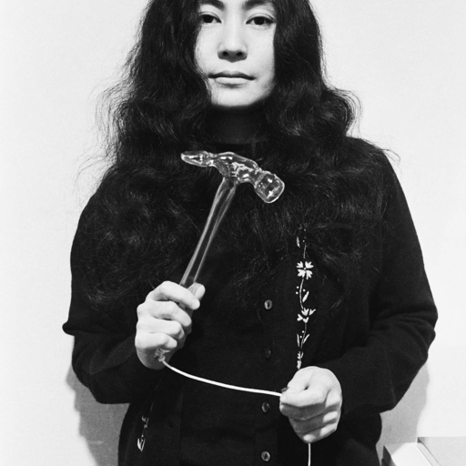
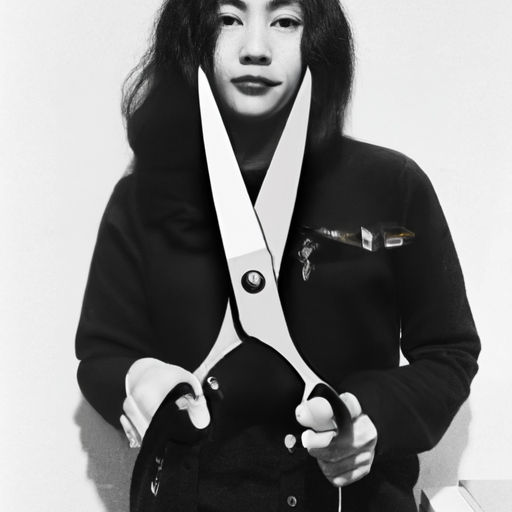
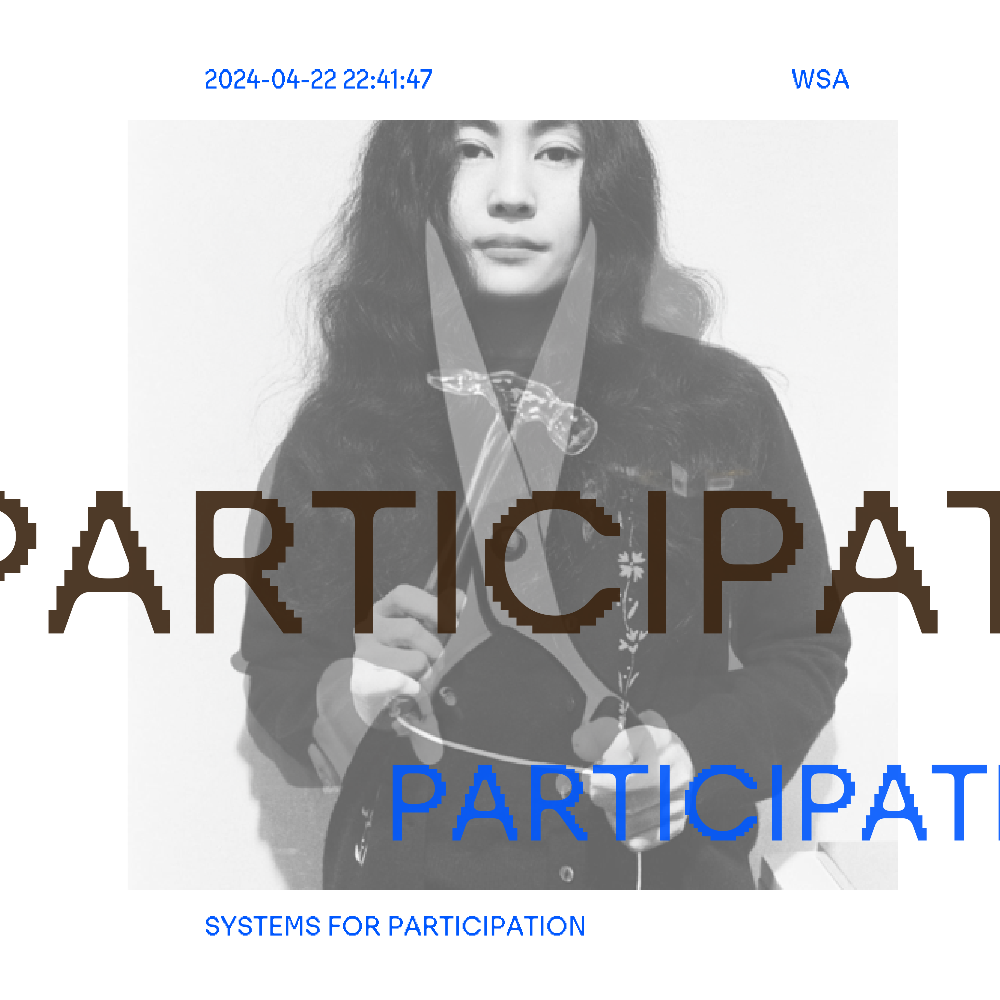
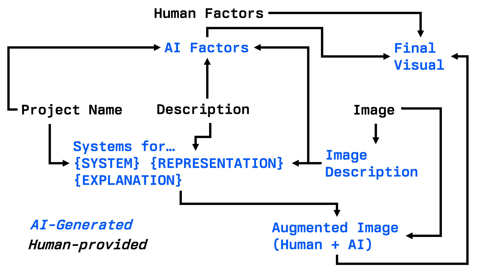

This year’s Winchester School of Art final year graphic design degree show will be presented under the Systems for… unification. Each project will be assigned a single word that summarises the system that best summarises the purpose of the project. This post deals with how the system is defined for each project, and how we augment each project using AI.
Previously, I’ve written about human-AI collaboration1. I believe that methodologies2 that apply AI as a tool, and that are designed with humans in mind, will be particularly pervasive within the next 10 years across both the arts and engineering. This is the broad theme I have approached this project with.
1 Expert-Guided Bayesian Optimisation for Human-in-the-loop Experimental Design of Known Systems…The Machine Learning Reformation
2 Application centered methodologies, not foundational work.
We first begin by describing the provided image for use in downstream tasks. This is done using the Anthropic vision API

IMAGE DESCRIPTION: The image shows a woman with long, dark hair wearing a black coat. She is holding what appears to be a wooden walking stick or cane. The black and white photograph creates a striking, somber tone. The woman has a serious expression on her face as she gazes directly at the camera. The image has a thoughtful, introspective quality to it.
This description is combined with the provided project description, and standard prompt engineering is used to uncover the underlying system.
At the same time, we prompt the LLM to return a physical representation of the system. This will be used later.
Few-shot prompting3 is used with XML-like tags, and the response is preloaded with a single open-curly bracket to enforce a JSON output. The prompt is as follows:
3 Providing a few brief examples of expected inputs + outputs
Consider these aspects of the information provided, and decide on an interesting word that follows the phase ‘Systems for…’ that describes the project. The word may be unconventional, creative, and importantly emotional; associated to the key ‘system’.
You must also return something physical and visual that represents the word, associated to the key ‘representation’. The representation must be visually striking, interesting, and a single object.
You must only return valid JSON with no extra characters. You must never speculate about the future or potential of the description, only reasoning about the given text as stated.
< examples > < input > Title: Chromatic Fusion: An Immersive Journey Through Color and Emotion In this captivating final year art project, the artist takes viewers on a mesmerizing journey through the realm of color and its profound impact on human emotions. “Chromatic Fusion” is an immersive, multi-sensory installation that combines vibrant, large-scale abstract paintings, interactive light displays, and a meticulously curated soundscape. < /input > < output > {‘system’: ‘Viewing’, ‘explanation’: ‘The project is centered around the act of viewing, suggesting a focus on the visual experience.,’representation’: ‘An eye’} < /output >
< input > Title: The Future of Urban Mobility: A Sustainable Transportation Revolution This ambitious research project explores the future of urban mobility and envisions a sustainable transportation revolution that will transform the way people move through cities. By analyzing current trends in transportation, urban planning, and environmental sustainability, the research team aims to develop innovative solutions that address the challenges of congestion, pollution, and limited access to public transit. < /input > < output > {‘system’: ‘Motion’, ‘explanation’: ‘The project is focused on motion and movement, suggesting a strong emphasis on transportation and mobility.,’representation’: ‘A wheel’} < /output > < /examples >
< input > {project + image description} < output > {
The resulting physical representation is then used as a prompt within the DALL-2 inpainting API, augmenting the provided image. Here is an example of output and augmented image, choosing to add a pair of scissors representing participation.
{“explanation”:” The exhibition highlights Yoko Ono’s groundbreaking approach to audience participation and engagement, inviting visitors to actively encounter and contribute to her artworks.”, “system”: “PARTICIPATION”, “representation”: “A PAIR OF SCISSORS”}

The augmented visual represents the interplay between the visual as created by the student, and the AI’s interpretation of the system.
Finally, we assemble all the human-AI generated content into a visual for the degree show book. To further emphasise the collaborative role, we prompted each student for how human, natural, and mechanistic they believe their project to be. Then, we asked the AI to provide4 the same set of values between 0-100.
4 Through similar few-shot prompting as demonstrated above
These three parameters in turn control the size and location of text as it overlays onto both the augmented visual and the original visual (now combined).
Here, closer text in terms of location and size represents a level of similarity between how AI has determined a project to represented, and what it’s creator has intended.

At every stage, AI has been used as a tool to enhance the representation of the existing project. To not only determine an appropriate system, but to augment a project image, and raise questions about the intended interpretation.
An overview of the information flow is as follows:
